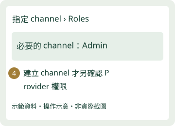

1. 提供基本資料
店名、店長信箱、官方 LINE 連結，以及是否已有其他串接。已提供的資料不重填，只補缺漏或更正。
查看／手動複製內容
2. 照圖完成管理邀請
用店家自己的帳號登入，選擇本店。確認窗口指定的接收人後，到「設定 → 權限管理」邀請管理員。

把邀請連結私下傳給原蒸管家窗口，由窗口指定的個人帳號接受。蒸管家官方 LINE 是聯絡窗口，不是受邀管理者。
開啟 LINE 官方帳號管理 ↗完成畫面：窗口接受後，本店權限清單出現指定管理員。
3. 回覆完成，等待串接
回覆窗口：「已發出邀請，請確認接受」，再由窗口核對。技術端會確認串接設定，完成後提供入口讓您驗收。
卡住找誰：原蒸管家窗口。回覆卡住步驟即可，不需提供登入密碼。
入口驗收可用後，才確認開始試用；完成邀請不會自動起算。
補充：沒有官方 LINE、已有串接或技術授權
- 尚無官方 LINE：由店家持有者建立並保有管理權，窗口協助。
- 已有或不確定其他串接：告知窗口，保留 Webhook、聊天與圖文選單現況。
- 邀請過期或權限不足：請原管理者協助，不分享密碼。
- 如需 LINE Developers 授權，由窗口另列必要 channel 與角色；不是所有店家的必做步驟。
- 未確認變更前，不啟用 Messaging API、不選 Provider、不覆蓋設定。
LINE 官方邀請說明 ↗